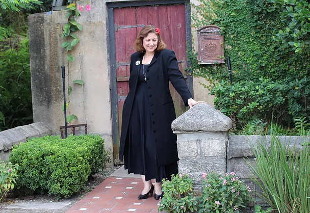

Jim Morrow
Dawn Morrow
Melinda Morrow
The Morrow Family Band, a.k.a. Cimarron, has been playing music throughout North Florida and South Georgia since 1999. Original members Jim and Melinda Morrow have been joined by their daughter, Dawn Morrow, to create a hip and timeless trio of family talent and charisma. Their song list consists of an eclectic mix of Top 40, Singer/Songwriter, Old Country, New Country, Classic Rock, Folk, Pop, and Rock songs ranging from Merle Haggard to Lana Del Rey. Their energetic stage presence and undeniable family charm are a must have at any bar, restaurant, or private event!